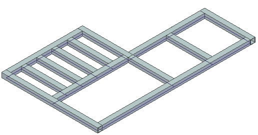
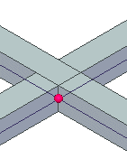
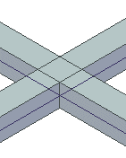

Activity: Editing a single vertex
1: Open an assembly
Note:
This activity requires you download the activity file for the Corner Treatment Options activity. If you have not worked that activity, download the activity file and complete step 1 of the activity.
Open edit03.asm.

2: Edit a corner treatment
In PathFinder, right-click Frame_2. Click Edit End Conditions on the context toolbar.
Dismiss the Frame Options box.
On the Frames command bar, click the Edit End Conditions button.
Select the vertex shown and then click the Accept button.

Choose the Butt button and then click Finish.

3: Close the assembly
Close edit03.asm without saving the file.